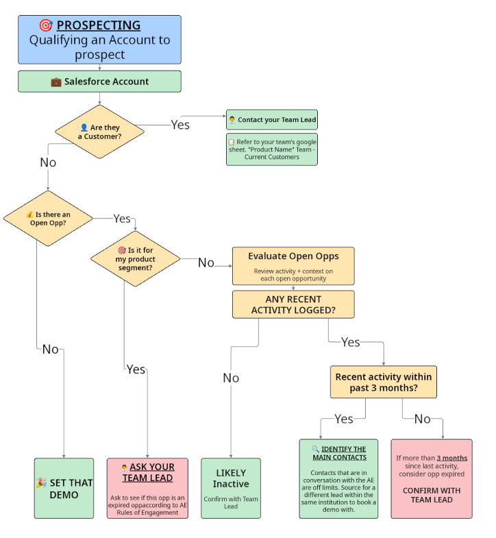
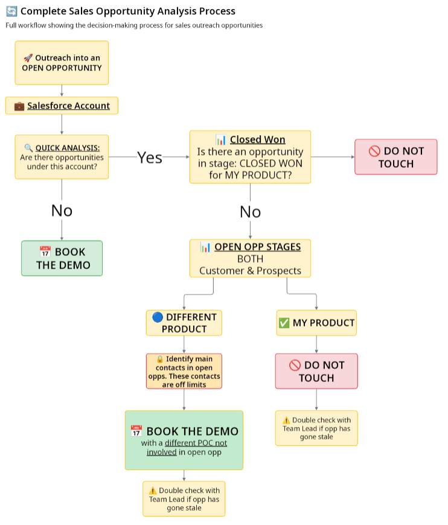
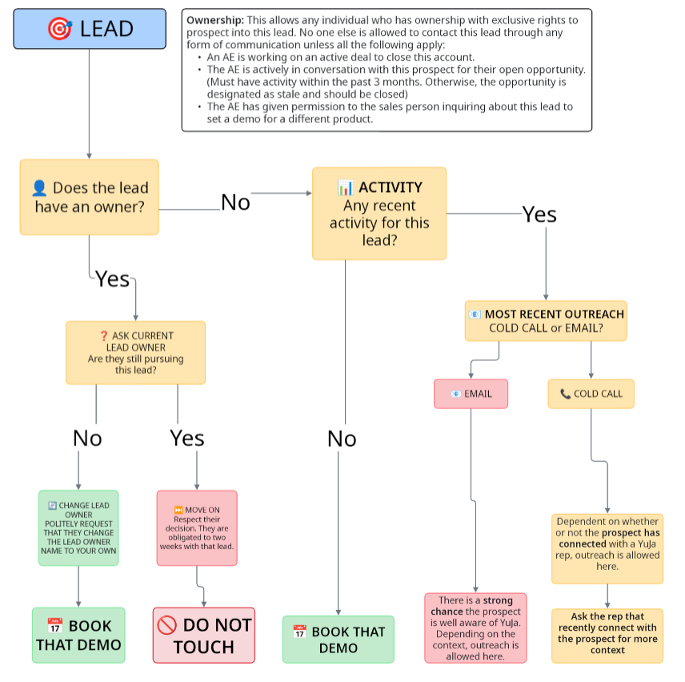

CRM Outreach Eligibility & ROE Compliance Reporting
Reporting system designed to surface outreach eligibility under Rules of Engagement (ROE) policies, allowing managers and SDRs to quickly identify which accounts and contacts were compliant for outreach activity.
System Overview
Rules of Engagement (ROE) governance defined when SDR outreach was permitted across shared Salesforce accounts. Because multiple product teams operated within the same institutions, SDRs needed a clear framework for determining when outreach was allowed without interfering with existing opportunities, account ownership, or active deal conversations. This framework standardized how representatives evaluated accounts, analyzed opportunity activity, and coordinated outreach across teams to maintain alignment and prevent prospect conflict.
Governance Decision Framework
Rules of Engagement policies were operationalized through a structured decision framework used by SDRs to determine whether outreach into an account or lead was permitted.
The framework standardized how representatives evaluated account status, existing opportunities, and lead ownership before initiating prospecting activity.
ROE Decision Workflows
Account Qualification Workflow
Process used when evaluating whether an account is eligible for prospecting based on customer status and opportunity activity.

Opportunity Conflict Analysis
Decision framework used when an account already contains open opportunities. SDRs must evaluate product alignment and avoid engaging contacts actively involved in ongoing deals.

Lead Ownership Evaluation
Lead ownership rules govern which representatives may contact a prospect. Ownership and recent activity must be verified before initiating outreach.

Structural Gap
- No consistent process for determining outreach eligibility.
- Salesforce opportunity activity required manual interpretation.
- SDRs risked contacting stakeholders already engaged in active deals.
- Cross-product teams lacked a standardized coordination framework.
- Lead ownership conflicts created prospect confusion and duplicate outreach.
Architecture
- Account Qualification Workflow – Structured process to determine customer status, opportunity presence, and activity recency.
- Opportunity Activity Evaluation – SDRs assess opportunity status, product alignment, and recent activity before initiating outreach.
- Contact Participation Restrictions – Contacts engaged in active opportunities are marked as restricted from SDR outreach.
- Lead Ownership Protocol – Ownership rules ensure only the assigned owner or authorized representatives can contact a prospect.
- Coordination Escalation Layer – SDRs escalate stale opportunities or ambiguous ownership cases to team leadership.
Tools
- Salesforce account and opportunity records
- Opportunity activity timeline analysis
- Lead ownership tracking
- SDR coordination protocols
- Team lead escalation workflows
Scale
- Primary users: SDR teams operating across multiple product lines
- Scope: shared institutional accounts within the CRM
- Coverage: opportunity evaluation, contact restrictions, and lead ownership
- Objective: prevent cross-team prospect conflicts
Operational Impact
- Reduced prospect conflicts across product teams.
- Improved coordination between SDRs and Account Executives.
- Standardized opportunity review process.
- Clear escalation paths for stale or ambiguous opportunities.
- Improved prospect experience through coordinated outreach.
Future Improvements
- Automate opportunity activity detection for stale deals.
- Introduce CRM flags for restricted contacts.
- Build automated outreach eligibility indicators.
- Surface ownership conflicts directly in SDR workflows.